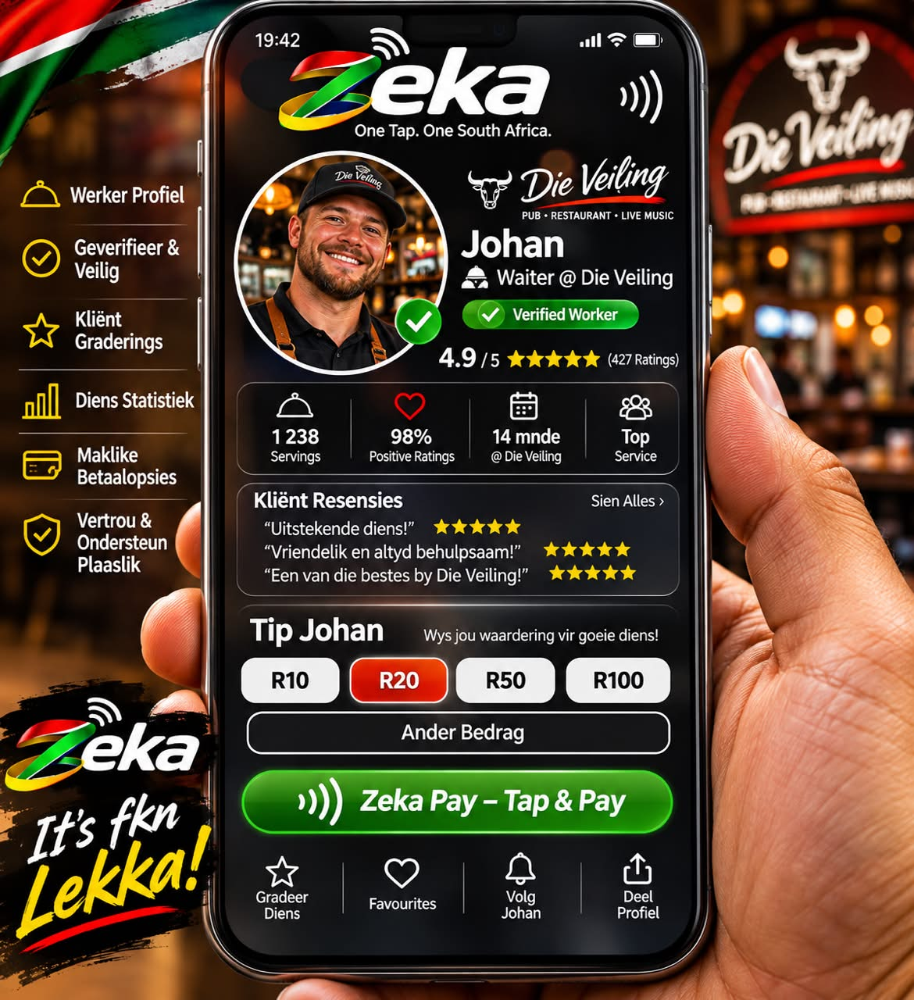
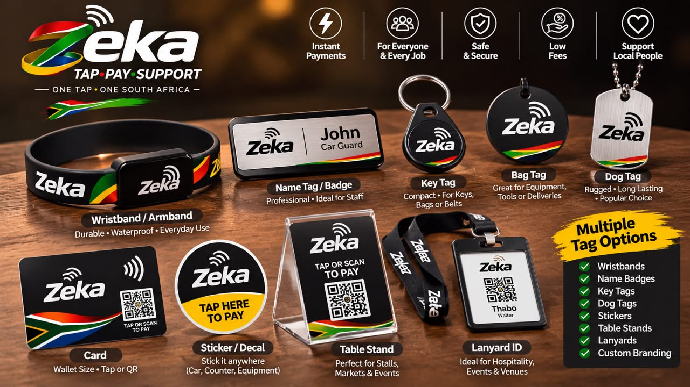

Good problem. Crowded market. Wrong business model as pitched.
As written, Zeka is a consumer fintech that would arrive eighth or ninth into a market where at least four funded players already do exactly this, several of them for free. Re-scoped as a staff tipping and service-rating layer sold to venues, it becomes a sensible, low-capital business that Die Veiling can prove in 60 days.
A "payment identity for every South African" needs a licence, millions in capital and has to beat the banks' own free PayShap ID.
Venue pays a monthly fee for staff profiles, ratings and tips. Workers keep 100%. A licensed partner moves the money.
Run it in Die Veiling's 4 pubs for 60 days. Hard go / no-go numbers below. Spend almost nothing until they pass.
The idea in one paragraph
Every worker gets a Zeka identity on an NFC wristband, badge, key tag, sticker or card. A customer taps it with their phone (or scans the QR), a payment page opens, they pick R10, R20, R50, R100 or a custom amount, and the money lands in the worker's bank account. No app, no card machine, no cash. Zeka earns a fee per payment, plus premium accounts, hardware sales, enterprise deals, advertising and later a marketplace. The long-term vision: "Just Zeka me" replaces "send me your banking details".


The scorecard
Two columns: the idea exactly as pitched, and the re-scoped "Zeka for Venues" version described further down. 10 is always good (so for competition, 10 means an open field; for capital, 10 means it needs very little).
The problem is real, and everyone has noticed
Cash is narrowing, not gone
Cash use is broadly steady, but it is being pushed into fewer situations. The ones it is leaving fastest are exactly the small, spontaneous payments Zeka targets: tips, guards, attendants.
Digital tips are bigger tips
Tipped reports the average digital tip for attendants and car guards reached R30, against the R5 or R10 coin habit. Tipped also claims about 40% more in tips for staff at Sasol forecourts.
The rails are ready
PayShap passed one billion transactions in June 2026. Standard Bank charges a flat R2 to a ShapID from January 2026; TymeBank is free; Capitec is free under R100.
Three customers, only one of them pays
| Who | What they want | Will they pay? |
|---|---|---|
| The worker (waiter, guard, attendant) | More tips, instantly, without losing a cut | Only through a fee off the tip, and they compare 90% vs 100% kept |
| The tipper (customer) | A fast, safe way to say thanks without cash | A R1 to R2 convenience fee, if it is shown up front |
| The venue owner | Better service, staff who stay, more 5-star reviews, data on who performs | Yes: a monthly subscription, the way they already pay for POS and review tools |
There are at least 11 alternatives, not 3
The original brief names Talo Pay, Happy Tap and TapTip. We could not find a South African tipping product called Happy Tap (it may be Tappy, which matches the description). The brief also misses the four strongest players: Tappy, Tipped, SnapScan Tip4Change and the banks' own PayShap request and Pay Me links.
| Player | How it works | Pricing (published) | Focus | Threat |
|---|---|---|---|---|
| Tappy | NFC wearable plus Tappy Wallet; transfer to bank in seconds; says it has SARB approval | 10% on tips, 3% on trade, R2.70 per wallet withdrawal; armband or key tag R49; no monthly fee | Mass market tipped workers; retail at Dis-Chem and Studio88; claims 50,000 devices shipped | Very high |
| Tipped | QR scanned with any bank app or wallet (Masterpass rail) | Fee not published | Sasol forecourts (exclusive fuel partner), car guards, caddies, waiters; new investment from Numeral Group in 2026 | Very high |
| Talo Pay | NFC wristband plus QR; settles in real time via PayShap to the worker's own bank | No sign-up fee, wristband free, worker keeps about 90% (flat fee not published) | Tipping, business onboarding | High |
| SnapScan Tip4Change | QR on a lanyard, scanned in SnapScan | Not published for tippees | Car guards; 1,000+ guards across Western Cape suburbs | Medium |
| TapTip | NFC plus QR badge on a vest; shows name, badge number and venue | 10% service fee (attendant keeps 90%); R150 once-off vest and badge; R1 tipper service fee shown | Car guards and attendants | Medium |
| TapAPI | Tap-to-pay "Tip Me" device plus free digital wallet | No commission; only the payment cost (about R1.15 on R20), tipper can cover it; R75 device | Tipping and small payments | Medium |
| Tap2Tip | Tip page and wallet | 1.95% platform fee; R4.95 EFT or R7 PayShap withdrawal | Hospitality tippees | Low |
| Street Wallet | Scan to pay via SnapScan, Zapper and others; bought Digitip in 2025 | No fixed or upfront cost to the worker | Car guards, informal car washers (Plush Car Wash partnership) | Medium |
| Yoco tip prompt | Tip added on the card machine at payment | Inside normal card fees (2.55% to 2.95%) | 14,900+ merchants have it switched on; about R1bn tips processed | High for venues |
| Pick n Pay Appreciation Voucher | R5, R10, R20 vouchers bought at the till, redeemed for groceries | Free to the customer beyond the voucher | Car guards at Pick n Pay stores, national since late Oct 2026 | Medium |
| Banks: PayShap ShapID, Capitec Pay Me | Your cellphone number is your payment ID; QR or link | R0 to R2 per payment at most banks for small amounts | Everyone with a bank account. This is the "payment identity" Zeka wants to become | Existential for the vision |
What a worker keeps on a R30 tip
Before any withdrawal fees. Zeka's recommended model charges the venue, not the worker, so the worker keeps the whole tip.
What the competitor set tells us. The 10% worker fee is the market standard, which makes "keep 100%" the easiest message to win on. And every player sells to the worker or the tipper. Nobody we found sells the venue owner a staff performance tool with tips inside it. That is the gap.
Strengths, weaknesses, opportunities, threats
SStrengths
- A real, felt problem with proven demand (digital tips run at R30 average vs R5 to R10 cash)
- Strong, local, memorable brand that already looks finished
- A live pilot site on day one: four Die Veiling pubs with live music and regulars
- The builder already has the NFC supply chain, tap-page tech, review routing and a live membership platform at Die Veiling
- The worker profile with ratings is a better product than a bare tip page
WWeaknesses
- No payments licence, no sponsoring bank, no compliance team
- Revenue per tip is cents once card or EFT costs come off
- Two-sided cold start: workers need tippers who know the brand, and the reverse
- Many entry-level Android phones have no NFC, so QR will carry most of the volume
- The "payment identity for everyone" vision has no plan to beat free bank tools
OOpportunities
- Venue owners want service data per staff member; nobody packages it with tipping
- Workers keep 100% beats the 90% market standard
- Staff ratings feed Google reviews (the ReviewTap engine), which owners already pay for
- Live music: "Zeka the band" at every gig, a natural in-venue moment
- Later: fundraisers, churches, schools and events once the venue base is proven
- Retailers and forecourts other than Sasol have no tipping partner yet
TThreats
- Banks keep making PayShap cheaper and easier (ShapID, Pay Me QR codes)
- Tappy and Tipped are funded, ahead and growing
- Yoco and other POS tools add tipping to the card machine for free
- Payments regulation is mid-transition from PASA to the Reserve Bank in 2026, so rules may tighten
- Staff ratings raise POPIA and labour questions if not handled with consent
- Fraud: fake tags, cloned QR stickers, social engineering of workers
Seven things the pitch doesn't solve yet
The money-flow paradox
If the tip goes straight from the customer's bank to the worker's bank, Zeka never touches it and cannot take a fee. If the tip flows through Zeka so it can take a fee, Zeka is collecting money on behalf of others and needs third-party payment provider registration through a sponsoring bank, plus FICA checks on every worker. You have to pick one, and the pitch assumes both.
The fee doesn't survive the payment cost
See the worked example below. On a typical tip, a 10% fee is mostly eaten by card or instant-EFT costs and payout fees. The tip-fee model only works at very large volume, which is a capital race against Tappy and Tipped.
The banks already own "payment identity"
"Just Zeka me" competes with "my number is my ShapID", which works across every major bank and costs R0 to R2. Zeka cannot out-cheap or out-trust a bank on identity. It can own something banks don't do: the worker's verified work profile and reputation.
The tagline blocks the biggest doors
"It's fkn Lekka!" works in a pub. It will not get past a Sasol, Engen or mall landlord procurement team, a school, a church or Meta's ad review. Keep the energy, lose the word: "Dis Lekka. Zeka." or "Just Zeka it."
The flag in the logo is a legal question
The logo is built from the national flag. Commercial use of the flag, and registering it inside a trademark, is restricted in South Africa. Get an IP attorney's view and run a CIPC trademark search on "Zeka" before printing a single wristband. We found no conflicting payments brand in a web search, but a web search is not a trademark search.
NFC is the hook, QR is the workhorse
iPhones from the XS onwards read NFC tags without an app; many cheaper Android phones have no NFC at all, or have it switched off. Every Zeka item must carry a QR code, and the pitch should stop promising tap for everyone.
Ratings of real people need rules
The mock-up shows Johan's 4.9 stars and 427 ratings. In a live product, staff must consent, know who sees their scores, and the venue must not use them unfairly in discipline. Written tip-ownership terms (tips belong to the worker, in full) protect the brand from the first venue that tries to skim.
Worked example: one R25 tip under the pitched model
| Line | Rand |
|---|---|
| Tip paid by the customer | R25.00 |
| Zeka fee at the market-standard 10% | R2.50 |
| Card pay-in cost (about 2.9% plus about R1.50, estimate) | -R2.23 |
| Payout to the worker by PayShap (R1 to R2, spread across daily batches, estimate) | -R0.20 |
| Left for Zeka per tip | about R0.07 |
| Same tip with a R2 tipper convenience fee added | about R2.07 |
Even with a tipper fee, a full consumer fintech with a small team, support, compliance and marketing at roughly R250,000 a month (estimate) needs about 120,000 tips a month to break even, which is around 2,000 workers each taking 60 digital tips a month, every month. Tappy says it has 50,000 devices out already.
Zeka for Venues: the staff tap that pays and rates
Keep the brand, the wristbands and the profile page. Change who pays and who holds the money.
For the worker
- A verified Zeka profile: name, photo, venue, ratings
- Tips by tap or QR, keep 100%
- A portable work reputation they take to their next job
For the customer
- Tap the wristband or table stand, tip, rate the service in 10 seconds
- No app, no account
- Happy guests are invited to leave a Google review (the ReviewTap flow)
For the owner (who pays)
- Dashboard: ratings, tips and comments per staff member and per shift
- Unhappy feedback comes to the manager privately, in real time
- Monthly "top service" leaderboard and staff awards
- More Google reviews from the same tap
How the money moves (three options, in order of preference)
| Option | How | Regulatory load | Verdict |
|---|---|---|---|
| A. Licensed gateway with split payouts | A registered payment provider (Peach, Ozow, Payfast, Stitch or similar) takes card, Apple Pay or instant EFT and settles to each worker's account. Zeka adds a R2 tipper fee. | Sits with the partner | Recommended for the pilot, subject to the partner approving the use case |
| B. Partner with an existing tip rail | Zeka owns the venue, profile and ratings layer; a tipping company that is already registered moves the money via API. | Sits with the partner | Strong fallback, and a possible distribution deal |
| C. Direct to worker's own ShapID | The page shows the worker's PayShap ID or bank QR; the customer pays from their own banking app. | None | Zero cost, more friction. Good as a no-cost backup on every profile |
Because the venue pays the subscription, Zeka does not need to make money on the tip itself. That single change fixes the unit economics, the regulation and the "keep 100%" story at the same time.
Five income lines, one that matters first
| Line | Proposed price | Notes |
|---|---|---|
| Venue subscription | R399 per venue per month, includes 10 staff; R29 per extra staff member | The core. Founding venues (first 20) locked at R299 for 12 months. |
| Hardware | Wristband R89, name badge R119, table stand R149, sticker pack R49 | Sold to the venue at a healthy margin. Unit costs to be confirmed with the NFC supplier. |
| Tipper convenience fee | R2 per tip, shown before paying | Covers the payment cost. Not a profit line at first. |
| Group and enterprise | Custom, from R2,500 per month for 5+ sites | Pub and restaurant groups, hotel groups, forecourt franchisees. |
| Later: events, fundraisers, sponsorship | Per-event fee or percentage | Only after the venue base works. Advertising and a marketplace stay off the roadmap for now. |
Positioning against the R1,000 to R2,000 a month that venues already spend on POS and review tools: Zeka should feel like "one good waiter's tips for one night".
Three-year view, three scenarios
Assumptions: average venue pays about R550 a month (base plan plus 5 extra staff); each new venue buys about R2,200 of hardware (15 wristbands, 6 table stands); figures are revenue, before costs. These are planning estimates, not forecasts.
| Scenario | Venues end Y1 | Venues end Y2 | Venues end Y3 | Revenue Y1 | Revenue Y2 | Revenue Y3 |
|---|---|---|---|---|---|---|
| Conservative | 20 | 70 | 180 | R110,000 | R420,000 | R1,080,000 |
| Base | 40 | 150 | 400 | R220,000 | R870,000 | R2,370,000 |
| Stretch | 80 | 300 | 800 | R440,000 | R1,740,000 | R4,740,000 |
Start-up cost (estimates)
- Venue MVP built on existing NFC, tap-page and Klub components: about R60,000 to R120,000
- Pilot hardware for 4 pubs (about 60 wristbands, 30 stands): about R6,000 to R10,000 at cost
- Legal: trademark search and filing, IP opinion on the logo, staff consent and tip terms: about R15,000 to R30,000
- Running cost after launch: hosting and tools about R3,000 to R6,000 a month
For comparison: the pitched version
- Payments licence route via a sponsoring bank, compliance and audits: months of work, six figures
- Team of 4 to 6, support, fraud and marketing: roughly R2m to R4m in year one (estimate)
- Break-even needs thousands of active workers tipping every day
- Realistic only with outside investment, which needs pilot data first anyway
Win the room first, then the town, then the category
Positioning
For venue owners: "Know who gives great service. Reward them. Keep them."
For workers: "Your tips, all of them. Your name, your reputation."
For customers: "No cash? Zeka them."
Brand fixes before launch
- Replace "It's fkn Lekka!" with a clean line ("Dis Lekka. Zeka.")
- Logo: keep the colours and ribbon, drop literal flag geometry if the IP opinion says so
- Make every screen bilingual (Afrikaans and English first, then isiZulu and Sesotho); "One South Africa" in Afrikaans only undercuts itself
Channels, in the order to use them
| Phase | Channel | What it looks like |
|---|---|---|
| 1. Pilot (Die Veiling) | In-venue | Wristbands on every waiter and bartender, table stands, a "Zeka the band" call-out at every live set, a monthly top-server award announced on stage and on Die Veiling's socials. |
| 1. Pilot | Staff as marketers | Staff explain it in one line at the table: "No cash? Just tap my band." Coach it, script it, reward the best adopters. |
| 2. Proof | PR | Local and tech press covers every new tipping product. Pitch a data story, not a launch: "Waiters at four Vaal pubs earned X% more in tips in 60 days". |
| 2. Proof | Owner-to-owner | Case study video with Harry and two staff members. Shared on WhatsApp and LinkedIn to venue owners; used in every sales meeting. |
| 3. Scale | Existing ReviewTap customers | Offer Zeka staff tags to hospitality clients who already use review cards and stands. |
| 3. Scale | Paid social to owners | Small Meta and LinkedIn budgets aimed at restaurant, pub and salon owners in Gauteng, leading with the case study. |
| 3. Scale | Associations and events | Hospitality associations, restaurant expos, music venues and festival organisers. |
| 4. Expand | New segments | Salons, hotel groups, forecourt franchisees (outside Sasol), car guard management companies at malls, then fundraisers and events. |
What not to spend on yet: consumer brand advertising. Customers learn Zeka at the table from the waiter, not from a billboard. Consumer awareness is a phase-4 problem.
Sell to owners, one venue group at a time
Ideal customer
- Sit-down restaurants, pubs, bars and live-music venues with 10 or more front-of-house staff
- Multi-site groups first (one decision, several venues)
- Owners who already care about Google reviews and staff turnover
- Start in the Vaal and Gauteng, where Die Veiling is the reference
The pitch in 30 seconds
"Your customers don't carry cash, so your best staff are losing tips and you can't see who your best staff are. Zeka puts a band on each server. Guests tap to tip and rate. Your staff keep every rand, you see service scores per person per shift, and happy guests leave Google reviews. Harry runs it in four pubs. Want to see his numbers?"
The offer
30-day pilot
One venue, free subscription, wristbands at cost. Success is agreed up front (staff active, tips per server, rating volume).
Founding venue
R299 a month locked for 12 months for the first 20 venues, in exchange for a testimonial and a case study.
Group deal
Five or more sites: one contract, a group dashboard comparing venues, custom-branded bands.
Pipeline maths for 40 venues in year one
| Monthly activity | Number |
|---|---|
| Owner conversations (calls, walk-ins, intros from Harry and ReviewTap clients) | 40 |
| Demos (at the venue, phone in hand, tap a real band) | 12 |
| Pilots started | 4 |
| Pilots that convert to paying | 3 |
| Twelve months plus the four Die Veiling pubs | about 40 venues |
Objections and answers
| Objection | Answer |
|---|---|
| "My Yoco already asks for a tip." | It does, at the till, for the bill. Zeka rates and tips a person, works at the table and the bar, and shows you who drives it. |
| "My staff already use Tappy or Tipped." | Great, they can keep it. Zeka is the service-score and reviews layer; with Zeka they also keep 100%. |
| "Staff won't like being rated." | Top staff love it: it is their tips and their reputation. Scores are coaching tools, and staff see their own. |
| "Another monthly fee?" | About the tips one good waiter makes in a night. Cancel any month. |
Prove it in four pubs before anyone spends real money
Weeks 1 to 2: decide and de-risk
Agree ownership and funding between Harry and JCE Media. Trademark search on "Zeka", IP view on the logo, new tagline. Pick the payment partner and get their written OK for the tipping use case.
Weeks 3 to 6: build the pilot
Worker profiles, tip and rate page, owner dashboard, staff consent and tip-ownership terms. Order bands and stands with QR on every item. Train staff at all four pubs with a one-line script.
Weeks 7 to 14: run the pilot (60 days)
All four Die Veiling pubs live. Weekly numbers to Harry: active staff, tips per server, average tip, ratings, Google reviews generated, complaints caught privately.
Day 60 gate: go or stop
Go if at least 70% of front-of-house staff are active, the median active server gets 5 or more digital tips a week, at least 1 in 10 tables leave a rating, and Harry would pay R399 per pub himself. Stop (or pivot to a pure Die Veiling staff tool) if any two of those miss.
Weeks 13 to 14: if go, sell
Case study with Harry, founding-venue offer live, first 10 owner conversations booked from Harry's network and existing ReviewTap hospitality clients.
Risk register
| Risk | Likelihood | Impact | Mitigation |
|---|---|---|---|
| Payment partner declines the tipping use case | Medium | High | Ask two partners in parallel; keep the ShapID fallback on every profile; option B (an existing tip rail) as plan C. |
| Staff don't use it after week two | Medium | High | Leaderboard, monthly award, managers mention it at shift briefing, band call-outs at gigs. |
| Trademark or flag conflict | Low to medium | High | Search and legal view before any printing; nothing ordered in volume until cleared. |
| Fraud: cloned QR stickers, fake profiles | Medium | Medium | Verified profiles tied to the venue, tamper-evident stands, worker name and photo shown before paying. |
| POPIA and labour complaints about ratings | Low | Medium | Written staff consent, staff see their own data, ratings never shown publicly without consent. |
| A big player copies the venue angle | Medium | Medium | Move fast in one region, lock founding venues into 12-month terms, deepen the reviews integration. |
| Regulation tightens during the 2026 SARB transition | Medium | Low (if partner holds funds) | Never hold customer money ourselves. |
Five things to agree before any building starts
Which business are we building?
The national payments brand as pitched, or Zeka for Venues. This plan recommends venues first, with the bigger vision kept as a later option once there is data.
Who owns it and who funds the pilot?
Harry's idea and venues, JCE Media's build. Options range from a paid build (as with the Klub) to a shared venture. Agree it in writing before week one.
Keep the name Zeka?
Only if the trademark search is clean. Have one backup name ready.
The tagline
Keep "It's fkn Lekka!" inside Die Veiling if you like, but the brand line for every other door needs to be clean.
Commit the four pubs to the 60-day pilot and the go / no-go numbers
The whole plan rests on honest pilot data. Agree the targets now so nobody moves the goalposts later.
Where the facts came from
Competitor pricing is taken from each company's own site or press coverage as of November 2026 and may change. Where a fee is not published we say so. Projections, costs marked "estimate" and the per-tip maths are our planning assumptions.
- Talo Pay and Talo Pay compliance
- MyBroadband: tipping car guards and attendants without cash (Tappy fees and device prices)
- IT News Africa: Tappy launch and TechFinancials on Tappy
- TapTip South Africa, TapAPI, Tap2Tip
- Sasol: digital tipping powered by Tipped and EWN: average digital tip reaches R30
- TopAuto: new cashless tipping solutions (Tipped investment, 2026)
- SnapScan Tip4Change
- TechCabal: Street Wallet and car washers
- Yoco: R1 billion in tips
- BusinessTech: Pick n Pay Appreciation Voucher and EWN coverage
- PayShap: one billion transactions, TechCentral: Standard Bank PayShap fees, PayShap fees by bank (2026)
- Capitec Pay Me and Capitec PayShap
- SARB: payment system management body transition and ENS: new rules for payment providers
- MyBroadband: card payment costs for small businesses